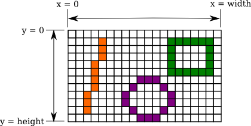
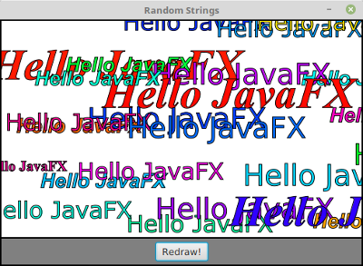
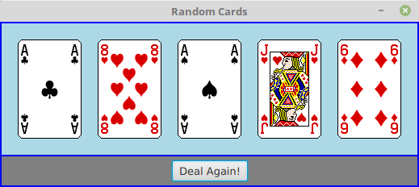

Basic Classes
In this section, we will look at some basic classes, including classes representing colors, fonts, and images. We will see how these classes are used in the GraphicsContext API, which you already encountered in a preliminary way in Section 3.9, but they are also useful in other parts of JavaFX. There is also a brief introduction to CSS style sheets, which can be used to control many aspects of the visual appearance of GUI components.
Color and Paint
Computer color uses an RGB color system. That is, a color on a computer screen is specified by three numbers, called color components, giving the level of red, green, and blue in the color. A color is represented by an object of type Color, from package javafx.scene.paint. In JavaFX, each color component is a double value in the range 0.0 to 1.0. A Color object also has a fourth component in the range 0.0 to 1.0, referred as the alpha color component, which is generally used to represent the transparency or opaqueness of the color when it is used for drawing. When a fully opaque color (alpha component equal to 1.0) is used for drawing, the drawing color completely replaces the current color of the drawing surface. When a fully transparent color (alpha component equal to 0.0) is used for drawing, it has no effect at all. When the alpha component is between 0.0 and 1.0, the drawing color is combined with the current color to give the new color of the drawing surface, as if the original contents of the drawing surface were being viewed through colored, translucent glass. A Color object can be constructed by giving its red, green, blue, and alpha components; for example,
Color myColor = new Color( r, g, b, a );where r, g, b, and a are in the range 0.0 to 1.0. However, the Color class also has a number of static methods for making color objects. Static methods whose job is to create objects are sometimes called factory methods. So instead of using the constructor, you could also say
Color myColor = Color.color( r, g, b, a );and in the common case of a fully opaque color, with a equal to 1.0, you can use
Color myColor = Color.color( r, g, b );These static factory methods are preferable to the constructor because they have the option of reusing color objects. For example, two calls to Color.color(0.2,0.3,1.0) might return the same Color object. This is OK because color objects are immutable; that is, there is no way to change a color after it has been constructed. So there is really no reason to use two different objects to represent the same color.
Your computer screen probably uses "32-bit color," which means that the color of each pixel is actually represented using just 8 bits for each of the four color components. Eight bits can represent the 256 integers in the range 0 to 255, so computer colors have traditionally been specified using integer color components in the range 0 to 255. The Color class has the following static method for making colors in this way:
Color.rgb( r, g, b )where r, g, and b are integers in the range 0 to 255. There is also Color.rgb(r,g,b,a) where r, g, and b are ints in the range 0 to 255, and a is a double in the range 0.0 to 1.0.
An alternative to RGB is the HSB color system. In the HSB system, a color is specified by three numbers called the hue, the saturation, and the brightness. The hue is the basic color, ranging from red through orange through all the other colors of the rainbow. The brightness is pretty much what it sounds like. A fully saturated color is a pure color tone. Decreasing the saturation is like mixing white or gray paint into the pure color. In JavaFX, the hue is given by a double value in the range 0.0 to 360.0, while saturation and brightness are double values in the range 0.0 to 1.0. (The hue value is given in degrees, were the colors are seen as laid out along a circle, with both 0.0 and 360.0 representing pure red.) The Color class has static methods Color.hsb(h,s,b) and Color.hsb(h,s,b,a) for making HSB colors. For example, to make a color with a random hue that is as bright and as saturated as possible, you could use:
Color randomColor = Color.hsb( 360*Math.random(), 1.0, 1.0 );The RGB system and the HSB system are just different ways of describing the same set of colors. It is possible to translate between one system and the other. The best way to understand the color systems is to experiment with them. The sample program SimpleColorChooser.java lets you do that. You won't understand the source code at this time, but you can run it to play with color selection or to find RGB or HSB values for the color that want.
The Color class also contains a large number of constants representing colors, such as Color.RED, Color.BLACK, Color.LIGHTGRAY, and Color.GOLDENROD. It might be worth mentioning that Color.GREEN is the fairly dark green color given by Color.rgb(0,128,0); the constant representing Color.rgb(0,255,0) is Color.LIME. There is also Color.TRANSPARENT, which represents a fully transparent color, with all RGBA color components equal to zero.
Given a Color, c, you can find out the values of the various color components by calling functions such as c.getRed(), c.getHue(), and c.getOpacity(). These methods return double values in the range 0.0 to 1.0, except for c.getHue(), which returns a double in the range 0.0 to 360.0.
Color is a subclass of another class, Paint, which represents the more general idea of "something that can be used to fill and to stroke shapes." In addition to colors, there are image paints and gradient paints. I will not use these more general paints in this chapter, but they will be covered in Subsection 13.2.2. For now, you should just know that when a method has a parameter of type Paint, you can use a Color.
Fonts
A font represents a particular size and style of text. The same character will appear different in different fonts. In JavaFX, a font is represented by an object of type Font, from the package javafx.scene.text. Although the Font defines a couple of constructors, the best way to make a font object is with one of the static factory methods from that class.
A font has a name, which is a string that specifies a font family such as "Times New Roman." A given family can have variations such as a bold or an italic version of the font. And a font has a size, which is specified in "points," where a point should really be 1/72 inch but might in practice be equal to the size of a pixel. The most general function for making fonts can specify all of these options:
Font myFont = Font.font( family, weight, posture, size );If the system can't match the requested font properties exactly, it will return the font that it thinks best matches the parameters. Here, family is a String that should specify a font family that is available to the program. Unfortunately, there is no set of fonts that is required to be available. "Times New Roman," "Arial," and "Verdana" are likely to work. (These are fonts that were created by Microsoft and released for free use; they are installed on many systems.) You can pass null as the familyName to use the default font family.
Font "weight" is given as an enumerated type value from the enum FontWeight. It will usually be either FontWeight.BOLD or FontWeight.NORMAL, although there are a few other values such as FontWeight.EXTRA_BOLD. Similarly, font "posture" is one of the constants FontPosture.ITALIC or FontPosture.REGULAR. Both FontWeight and FontPosture are from package javafx.scene.text.
The Font class has several other static functions for making fonts, which specify only a subset of the four properties family, weight, posture, and size. These include: Font.font(size), Font.font(family), Font.font(family,weight,size), and a few others. The missing properties will have default values, which can depend on the computer where the program is running. The static function Font.getDefault() returns a font that has default values for all the properties. You can call Font.getDefault().getSize() to find the default point size. (It's 13.0 on my computer, but might be different on yours.) Here are a few examples of making fonts:
Font font1 = Font.font(40);
Font font2 = Font.font("Times New Roman", FontWeight.BOLD, 24);
Font font3 = Font.font(null, FontWeight.BOLD, FontPosture.ITALIC, 14);Image
The term "image" refers to something like a photograph or drawing—anything that can be represented by a rectangular grid of colored pixels. Images are often stored in files. JavaFX makes it easy to load an image from a file so that it can be displayed by a program. An image is represented by an object of type Image, from package javafx.scene.image. The constructor
new Image( path )is used to load an image from an image file. The path parameter is a string that specifies the location of the file. The location can be very general, such as an image on the Internet or on the user's computer, but for now I'm interested in images from resource files. A resource is something that is part of a program but is not code. Resources can include things like sounds, data files, and fonts, as well as images. The system can load resources for a program from the same places where it looks for the program's .class files. For a resource file in the program's top-level directory, the path to the file is simply the name of the file. If the file is in a subdirectory of the main directory, then the path includes the subdirectory name. For example, the path "images/cards.png" refers to a file named "cards.png" inside a subdirectory named "images," and "resources/sounds/beep.aiff" refers to a file named "beep.aiff" inside a directory named "sounds" that is in turn inside a directory named "resources."
There are many kinds of image files, which store the image data in a variety of formats. For JavaFX Image objects, you can use image files whose names end with .gif, .jpeg (or .jpg), .png, and .bmp. So, for example, if "cards.png" is a file in the top-level program directory, you can create the image object
Image cards = new Image( "cards.png" );The image can then be displayed in a GraphicsContext, as we will soon see. There will be other uses for images later in this chapter.
Canvas and GraphicsContext
The screen of a computer is a grid of little squares called pixels. The color of each pixel can be set individually, and drawing on the screen just means setting the colors of individual pixels. Every visible GUI component is drawn by coloring pixels, and every component has a coordinate system that maps (x,y) coordinates to points within the component. Most components draw themselves, but there is one JavaFX component on which you can draw anything you want by calling the appropriate methods. Such "drawing surface" components are of type Canvas, in package javafx.scene.canvas. A Canvas is a Node and so can be part of a scene graph. (However, it is not a Parent, so it cannot act as a container for other nodes and it cannot be the root of a scene graph. This means that even when a canvas is the only thing that you want to show in a window, it must still be placed into a container that will serve as the root of the scene graph.)
A Canvas appears on the screen as a rectangle made up of pixels. A position in the rectangle is specified by a pair of coordinates, (x,y). The upper left corner has coordinates (0,0). The x coordinate increases from left to right, and the y coordinate increases from top to bottom. The illustration shows a 20-pixel by 12-pixel canvas (with very large pixels). A small line, rectangle, and oval are shown as they would be drawn by coloring individual pixels:

Note that, properly speaking, the coordinates don't belong to the pixels but to the grid lines between them, and coordinates can, in fact, be numbers of type double and can refer to points inside a pixel. For example, the center of the top left pixel in a canvas has coordinates (0.5,0.5). In fact, all drawing is done using coordinates of type double.
The width and height of a Canvas can be specified in the constructor that is used to create the canvas object. For example, to create a tiny 20-by-12 canvas:
Canvas canvas = new Canvas(20,12)You can query the size of a canvas by calling canvas.getWidth() and canvas.getHeight(), which return values of type double. Canvasses are usually meant to be non-resizable, but the size can be changed if necessary by calling canvas.setWidth(w) and canvas.setHeight(h).
When a canvas is first created, it is filled with "transparent black," that is, with a color that has all RGBA components set to zero. This makes the canvas transparent: You will see whatever lies behind the canvas in the scene.
In order to draw on a canvas, you need an object of type GraphicsContext. Every Canvas has an associated GraphicsContext; different GraphicsContexts draw on different Canvases. You can get the graphics context for a Canvas, canvas, by calling canvas.getGraphicsContext2D(). For any given Canvas, this method will always return the same GraphicsContext object. Section 3.9 discussed some of the things that can be done with a graphics context. In particular, you learned that a shape can be stroked and, if it has an interior, it can also be filled. Methods in GraphicsContext, g, that can be used for drawing include the following, where all numeric parameters are of type double:
- g.strokeRect(x,y,w,h) and g.fillRect(x,y,w,h) — Draw a rectangle with top left corner at (x,y), with width w and with height h. If w or h is less than or equal to zero, nothing is drawn.
- g.clearRect(x,y,w,h) — Fill the same rectangle with a fully transparent color, so that whatever lies behind the rectangle will be visible through the canvas. Note that this is not the same as calling g.fillRect(x,y,w,h) with a transparent fill color; doing that has no effect at all on the contents of the rectangle.
- g.strokeOval(x,y,w,h) and g.fillOval(x,y,w,h) — Draw an oval that just fits inside the rectangle with top left corner at (x,y), with width w and with height h.
- g.strokeRoundRect(x,y,w,h,rh,rv) and g.fillRoundRect(x,y,w,h,rh,rv) — Draw a rectangle with rounded corners. The rectangle has top left corner at (x,y), with width w and with height h. A quarter oval is cut off each corner, where the horizontal radius of the oval is rh and its vertical radius is rv.
- g.strokeText(str,x,y) and g.fillText(str,x,y) — Draw the text of the String str. The point (x,y) is the left end of the baseline of the text. (A string is drawn on top of its baseline, with descenders such as the tail of a "y" extending below the baseline.) The string can contain multiple lines separated by newline ('\n') characters; (x,y) then gives the baseline of the first line of the string. Note that stroking text means drawing just the outlines of the characters.
- g.strokePolygon(xcoords,ycoords,n) and g.fillPolygon(xcoords,ycoords,n) — Draw a polygon, consisting of line segments connecting a sequence of points. The number of points is given by the third parameter, n. The first two parameters are arrays of type double[] containing the coordinates of the points. An extra line segment is automatically added to connect the last point back to the first. That is, the polygon connects the points (xcoords[0],ycoords[0]), (xcoords[1],ycoords[1]), ..., (xcoords[n-1],ycoords[n-1]), (xcoords[0],ycoords[0]).
- g.strokeLine(x1,y1,x2,y2) — Draws a line from (x1,y1) to (x2,y2). (It's no use trying to fill a line, since it has no interior.)
The GraphicsContext object, g has a number of properties that affect drawing. When anything is drawn using g, the current values of the relevant properties are used. This means that changing the value of a property does not affect anything that has already been drawn; the change only applies to things drawn in the future. Each property has a setter method and a getter method. One of the properties is the Paint that is used for filling (which in this chapter will always be a Color); this property can be set by calling g.setFill(paint), and you can get its current value by calling g.getFill(). Similarly, the Paint that is used for stroking can be set and get using g.setStroke(paint) and g.getStroke(), and the width of strokes can be set and get using g.setLineWidth(w) and g.getLineWidth(), where w is of type double. And you can set and get the font that will be used for drawing text with g.setFont(font) and g.getFont().
Note that stroking a shape is like dragging the center of a pen along the outline of the shape. The size of the pen is given by the linewidth property. The stroke that is drawn extends on both sides of the actual path of the pen by an amount equal to half of the linewidth. For example, if you draw a horizontal line of width 1 with endpoints (100,100) and (300,100), half of the stroke lies above the geometric line and half lies below it. The computer might show this by blending the color of the stroke color with the current color. If you want the stroke to nicely cover complete pixels, you should actually use (100.5,100.5) and (300.5,100.5) as the coordinates of the endpoints of the line. (Whenever you draw something, you might find that for pixels that are only partially covered, the drawing color is blended with the current color instead of replacing it. This is done to decrease the jagged appearance of shapes that are made out of whole pixels, like the line and oval in the above illustration. This is known as antialiasing.)
It is also possible to draw an image onto a canvas, where the image is represented by an object of type Image. There are several methods for drawing images:
- g.drawImage(image,x,y) — Draws the image with its upper left corner at (x,y), using the actual size of the image.
- g.drawImage(image,x,y,w,h) — Draws the image in the rectangle with upper left corner at (x,y), with width w, and with height h. The image is stretched or shrunk to fit that rectangle if necessary.
- g.drawImage(image, sx,sy,sw,sh, dx,dy,dh,dw) — Draws the contents of a specified "source" rectangle in the image to a specified "destination" rectangle on the canvas. This method lets you draw just part of an image. The source rectangle has upper left corner at (sx,sy), width sw, and height sh. The last four parameters specify the destination rectangle in a similar way.
It's time for a couple of actual examples. First, an example that draws some text using a variety of fonts. The program draws multiple copies of the string "Hello JavaFX" using random fonts and locations. The text is filled with random colors and stroked with a thin black stroke:

The program uses five fonts, which are created in the start() method using several different static factory methods from the Font class:
font1 = Font.font("Times New Roman", FontWeight.BOLD, 20);
font2 = Font.font("Arial", FontWeight.BOLD, FontPosture.ITALIC, 28);
font3 = Font.font("Verdana", 32);
font4 = Font.font(40);
font5 = Font.font("Times New Roman",FontWeight.BOLD,FontPosture.ITALIC,60);
The program defines a draw() method that completely redraws the content of a canvas. It is called when the canvas is first created, and it is also called when the user clicks the "Redraw" button. The method first fills the canvas with a white background, which erases the previous contents of the canvas. It then fills and strokes 25 copies of "Hello JavaFX", using a random fill color, a random position for the text, and a randomly selected font for each copy:
private void draw() {
GraphicsContext g = canvas.getGraphicsContext2D();
double width = canvas.getWidth();
double height = canvas.getHeight();
g.setFill( Color.WHITE ); // fill with white background
g.fillRect(0, 0, width, height);
for (int i = 0; i < 25; i++) {
// Draw one string. First, set the font to be one of the five
// available fonts, at random.
int fontNum = (int)(5*Math.random()) + 1;
switch (fontNum) {
case 1 -> g.setFont(font1);
case 2 -> g.setFont(font2);
case 3 -> g.setFont(font3);
case 4 -> g.setFont(font4);
case 5 -> g.setFont(font5);
} // end switch
// Set the color to a bright, saturated color, with random hue.
double hue = 360*Math.random();
g.setFill( Color.hsb(hue, 1.0, 1.0) );
// Select the position of the string, at random.
double x,y;
x = -50 + Math.random()*(width+40);
y = Math.random()*(height+20);
// Draw the message.
g.fillText("Hello JavaFX",x,y);
// Also stroke the outline of the strings with black.
g.setStroke(Color.BLACK);
g.strokeText("Hello JavaFX",x,y);
} // end for
} // end draw()
You can find the full source code for the program in RandomStrings.java.
The second sample program is similar, but instead of drawing random strings, it draws five playing cards dealt at random from a deck:

The deck and cards are represented using the Deck and Card classes from Section 5.4. The card images come from the file cards.png, which is a resource file for the program. The file contains a single image that contains images of all the cards, arranged in rows and columns. Here it is, shown at reduced size:
{kind=link}

(This image is from the Gnome desktop project, http://www.gnome.org.) The image file is loaded into the program in the start() method simply by saying
cardImages = new Image("cards.png");where cardImages is an instance variable of type Image. Suppose that we want to draw the card from row number R and column number C in a GraphicsContext g (where both rows and columns are numbered starting at zero). Each card in the image is 79 pixels by 123 pixels, so the card that we want has its top left corner at (79*C,123*R). If we want to place the card on the canvas with its top left corner at (x,y), we can use the third drawImage() method given above, which specifies a source rectangle in the image and a destination rectangle on the canvas:
g.drawImage( cardImages, 79*C,123*R,79,123, x,y,79,123 );In the program, the card that we want to draw is given by a variable card of type Card. The row and column in the image are determined by the suit and value of the card, which are given by card.getSuit() and card.getValue(). The values returned by these functions have to be manipulated a little to get the correct row and column numbers, and the position of the card on the canvas is calculated to leave a 20-pixel gap between one card and the next. Here is the draw() method from the program, which deals five random cards from a deck and draws them:
private void draw() {
GraphicsContext g = canvas.getGraphicsContext2D();
Deck deck = new Deck();
deck.shuffle();
double sx,sy; // top left corner of source rect for card in cardImages
double dx,dy; // corner of destination rect for card in the canvas
for (int i = 0; i < 5; i++) {
Card card = deck.dealCard();
System.out.println(card); // for testing
sx = 79 * (card.getValue()-1);
sy = 123 * (3 - card.getSuit());
dx = 20 + (79+20) * i;
dy = 20;
g.drawImage( cardImages, sx,sy,79,123, dx,dy,79,123 );
}
} // end draw()For the complete program, see RandomCards.java.
A Bit of CSS
JavaFX makes it possible to control the style—that is, the visual appearance—of components in a GUI using CSS (Cascading Style Sheets). CSS is one of several languages that are used to make web pages. It can control things like colors, fonts, and borders of elements of a web page. It has been adapted to play a similar role in other contexts, such as JavaFX. I do not intend to cover CSS in any detail, and anything that can be done with CSS can also be done with Java code. However, there are some things that are just easier to do with CSS; I will cover a few of them in this short section and will use them in my programs. For people who already know CSS, a guide to its use in JavaFX is available as I write this at
https://openjfx.io/javadoc/17/javafx.graphics/javafx/scene/doc-files/cssref.html
A CSS style rule consists of a property and a value for that property. For example, CSS can be used to place a border around many kinds of GUI components. A border has properties with names such as -fx-border-color and -fx-border-width. (All JavaFX CSS properties have names that begin with "-fx-" to distinguish them from regular CSS properties.) A value for -fx-border-color can be a color name such as red or lightblue, among other formats. One color format that I will use takes the form #RRGGBB, where R, G, and B stand for hexadecimal digits. A two-digit hexadecimal number can represent numbers from 0 to 255. The RR, GG, and BB in #RRGGBB represent the red, green, and blue components of a color, each in the range 0 to 255. For example, #FF0000 represents pure red, and #004444 represents a dark blue-green.
For the border width, the value can be a single size, such as 3px or 0.2cm. The syntax is a number followed by a unit of measure, with no space between them. Here, "px" stands for "pixels," and 3px means 3 pixels. When a width is given by a single size, the size applies to all four sides of the border. Alternatively, four sizes can be given, separated by spaces, specifying the border width on the top, right, bottom, and left, in that order. For example, a thick, blue border could be specified as
-fx-border-color: blue; -fx-border-width: 5pxand for a dark red border that is thicker on the top than on the other sides, you can use
-fx-border-color: #550000; -fx-border-width: 3px 1px 1px 1pxWhen several CSS rules are used together, they should be separated by semicolons.
The background color of a component can be set using -fx-background-color as the property name. The value is the same sort of color specification that would be used with -fx-border-color.
And the CSS property -fx-padding represents space that is left between the content of a component and its edge (or border if there is one). Like border width, padding can be specified as either a single size or a list of four sizes. For example: -fx-padding: 8px.
You can apply a style to a component using its setStyle() method, whose parameter is a String containing one or more CSS style rules. For example, suppose message is a Label. By default, labels have no padding or border. They can be added with a command such as
message.setStyle(
"-fx-padding: 5px; -fx-border-color: black; -fx-border-width: 1px" );You can set the font for a component that displays text using the -fx-font property. The value for this property specifies the size and font family for the font, and can optionally be modified by a weight ("bold"), or by a style ("italic"), or both. Some examples:
-fx-font: 30pt "Times New Roman";
-fx-font: bold italic 18pt serif;
-fx-font: bold 42pt monospace;Note that if the font family name contains spaces, it must be enclosed in quotes. The font families in the last two examples, "serif" and "monospace", are so-called generic family names that specify a certain style of font. Other generic names include "sans-serif", "cursive", and "fantasy". The characters in a serif font have short lines as decorations such as at the top and bottom of an upper case "I". A "sans-serif" font lacks these decorations. The characters in a "monospace" font all have the same width. Monospace fonts are good for drawing characters that are meant to line up in columns.
Many other properties can be set using CSS, but I will not cover them here. I will use CSS only for borders, padding, background colors, and fonts.
Setting the style for many components can be tedious. A CSS style sheet can be used to apply style to all components of a given type as well as to individual components and sets of components. A style sheet is a file, usually with a name ending with .css. I will not discuss the syntax, but here is a style sheet that will apply some style rules to all Labels and Buttons:
Button {
-fx-font: bold 16pt "Times New Roman";
-fx-text-fill: darkblue;
}
Label {
-fx-font: 15pt sans-serif;
-fx-padding: 7px;
-fx-border-color: darkred;
-fx-border-width: 2px;
-fx-text-fill: darkred;
-fx-background-color: pink;
}A style sheet file, just like an image file, can be a resource for a program. That is, it can be stored in the same place as the .class files for the program. Suppose that a style sheet named "mystyle.css" is in the program's top-level directory. You can then apply the style to all components in a scene with the statement
scene.getStylesheets().add("mystyle.css");A Scene can have several style sheets, and style sheets can also be added to individual containers.